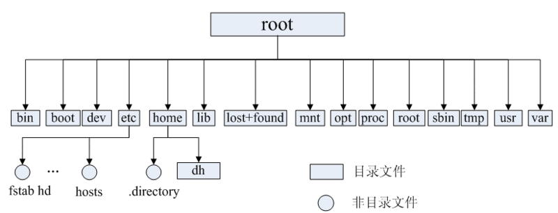
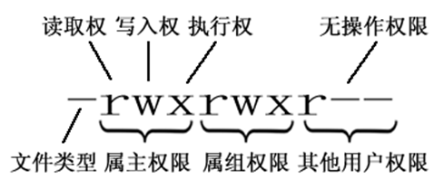

启动流程
POST -> BIOS(Boot Sequence) -> MBR(bootloader,446) -> Kernel -> initrd -> (ROOTFS)/sbin/init(/etc/inittab)
BIOS自检 -> 从BIOS中读取启动顺序 -> 读取MBR中的bootloader -> 加载内核 -> 读取伪根 -> 读取根文件中的init
文件系统
Linux 中，一切资源皆文件。比如网络接口卡、磁盘驱动器、打印机、输入输出设备、普通文件或是目录都被看作是一个文件。
文件类型
Linux 支持5种文件类型：
| 文件类型 | 描述 | 事例 |
|---|---|---|
| 普通文件 | 用于在辅存（如磁盘）上存储信息和数据 | 图片，影像等 |
| 目录文件 | 用于表示和管理系统中的文件，目录文件中包含一些文件名和目录名 | /root、/home |
| 链接文件 | 用于不同目录下文件的共享 | /root/a -> /tmp/a |
| 设备文件 | 用于访问硬件设备 | 包括硬件、键盘、光驱、打印机等 |
| 命名管道（FIFO） | 进程间的通信可通过该文件完成 |
目录结构
类似一棵倒立的树，最顶层是其根目录：

常见目录：
/bin ：存放二进制可执行文件（ls,cat,mkdir等），常用命令一般都在这里；
/etc ：存放系统管理和配置文件；
/home：存放所有用户文件的根目录，是用户主目录的基点，比如用户 user 的主目录就是 /home/user，可以用 ~user 表示；
/usr ：存放系统应用程序；
/opt ：额外安装的可选应用程序包所放置的位置。一般情况下，我们可以把 Tomcat 等都安装到这里；
/proc：虚拟文件系统目录，是系统内存的映射。可直接访问这个目录来获取系统信息；
/root：超级用户（系统管理员）的主目录；
/sbin: 存放系统管理员使用的系统级别的管理命令和程序，比如 ifconfig 等；
/dev ：存放设备文件；
/mnt ：系统管理员安装临时文件系统的安装点，系统提供这个目录是让用户临时挂载其他的文件系统；
/boot：存放用于系统引导时使用的各种文件；
/lib ：存放着和系统运行相关的库文件；
/tmp ：存放各种临时文件，是公用的临时文件存储点；
/var ：存放运行时需要改变数据的文件，也是某些大文件的溢出区，比方说各种服务的日志文件（系统启动日志）等；
/lost+found：这个目录平时是空的，系统非正常关机而留下“无家可归”的文件（windows下叫什么.chk）就在这里。
权限
操作系统中每个文件都拥有特定的权限、所属用户和所属组。
权限是操作系统用来限制资源访问的机制。
所属分为属主（owner），属组（group）、其他用户（other）。

| 标识 | 文件类型 |
|---|---|
| d | 目录 |
| - | 文件 |
| l | 链接 |
| 标识 | 权限 | 数字标识 |
|---|---|---|
| r | 可读（readable） | 4 |
| w | 可写（writable） | 2 |
| x | 可执行（excutable） | 1 |
文件和目录权限的区别
对于文件
| 权限名称 | 可执行操作 |
|---|---|
| r | 可用 cat 查看文件的内容 |
| w | 可修改文件的内容 |
| x | 可运行 |
对于目录
| 权限名称 | 可执行操作 |
|---|---|
| r | 可查看目录下列表 |
| w | 可创建和删除目录下文件 |
| x | 可用 cd 进入目录 |
常用命令
find
find 目录 参数：寻找目录（查）
列出当前目录及子目录下所有文件和文件夹：find .
在 /home 目录下查找以 .txt 结尾的文件名：find /home -name '*.txt'
同上，但忽略大小写：find /home -iname '*.txt'
当前目录及子目录下查找所有以.txt和.pdf结尾的文件：find . \( -name '*.txt' -o -name '*.pdf' \) 或 find . -name '*.txt' -o -name '*.pdf'
chmod
修改 a.txt 的权限为属主有全部权限，属组有读写权限，其他用户只有读的权限：chmod u=rwx,g=rw,o=r a.txt
还可以使用数字表示：chmod 764 a.txt
用户管理
添加用户账号：useradd 选项 用户名
删除用户帐号：userdel 选项 用户名
修改帐号 ：usermod 选项 用户名
清除用户密码：passwd -d 用户名
更改或创建用户的密码：passwd 用户名
显示用户账号密码信息：passwd -S 用户名
用户组的管理
添加用户组：groupadd 选项 用户组
删除用户组：groupdel 用户组
修改用户组：groupmod 选项 用户组
查看进程
查看进程：ps -ef/ps aux（两者的展示格式不同）
杀死进程：kill -9 pid（-9 表示强制终止）
查看端口使用：netstat -an
2.Linux状态分析：CPU（top）、内存（top和free，注意buffer和cache区别）、磁盘（fdisk和df）、IO（iostat）等
服务器状态分析
检测CPU和内存：vmstat（Virtual Meomory Statistics）
检测磁盘状态 ：iostat
检测带宽状态 ：netstat
vmstat
1 | $ vmstat |
Procs（进程）：
- r：运行队列中进程数量。
- b：等待IO的进程数量。
当r值超过了CPU个数，就会出现CPU瓶颈，解决办法：
- 增加CPU个数和核数。
- 通过调整任务执行时间，如大任务放到系统不繁忙的情况下进行执行，进而平衡系统任务。
- 调整已有任务的优先级。
Memory（内存）：
- swpd：使用虚拟内存大小。如果该值不为0，但 SI，SO 的值长期为0，这种情况不会影响系统性能。
- free：空闲物理内存大小。
- buff：用作缓冲的内存大小。
- cache：用作缓存的内存大小。该值越大，说明缓存的文件越多，如果频繁访问到的文件都能被缓存，那么磁盘的读IO bi会非常小。
Swap：
- si：每秒从交换区写到内存的大小，磁盘 -> 内存。
- so：每秒写入交换区的内存大小，内存 -> 磁盘。
注：内存够用时，这2个值都是0。如果这2个值长期大于0，系统性能会受到影响，磁盘IO和CPU资源都会被消耗。
IO：
- bi：每秒读取的块数。
- bo：每秒写入的块数。
注：随机磁盘读写的时候，这2个值越大（如超出1024k)，CPU在IO等待的值也会越大。
system（系统）：
- in：每秒中断数，包括时钟中断。
- cs：每秒上下文切换数。
注：上面2个值越大，内核消耗的CPU时间就越大。
CPU（以百分比表示）：
- us：用户进程执行时间百分比(user time)。该值越大，说明用户进程消耗的CPU时间越多，如果长期超50%，就该考虑优化程序。
- sy：内核系统进程执行时间百分比(system time)。该值越大，说明系统内核消耗的CPU资源多，应该检查原因。
- wa：IO等待时间百分比。该值越大，说明IO等待越严重，这可能由于磁盘大量作随机访问造成，也有可能磁盘出现瓶颈（块操作）。
- id：空闲时间百分比。如果长期低于10%，那么表示CPU的资源已经非常紧张，应该考虑进程优化或添加更多地CPU。
iostat
Blk_read/s：每秒读取的数据块数
Blk_wrtn/s：每秒写入的数据块数
Blk_read：读取的所有块数
Blk_wrtn：写入的所有块数
如果 Blk_read/s 和 Blk_wrtn/s 一直都很高，说明服务器对于硬盘的读写操作过于频繁，应该对其进行优化。
文本处理
wc
-c/–bytes/–chars：只显示字节数
-l/–lines：只显示列数
-w/–words：只显示字数（以空格划分）
grep
-v：反向查找
-i：查找时不区分大小写
-w：全词匹配
-n：显示每个搜索结果的行号
sed
暂略
awk
暂略